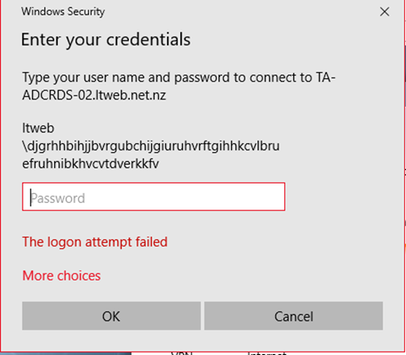
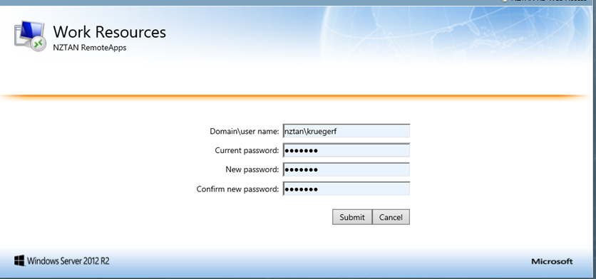

|
|
NZTA ABSuit Handbook |
| How To... |
|
How-To... ProjectCodes Servers Tools People Support ABSuiteReleases ABSuiteSetup TroubleShooting Releases Projects Azure DevOps Production NZTA Register AC DLR MVR WikiSearch |
You will be required to use 2 factor authentication to log into any NZTAN RDS services from now on. If you do not, you will not be able to login.Using your 2FA credentialsLaunch the Microsoft Authenticator app on your phone. On the RDS website: https://rdswlg.nztan.net.nz/RDWeb/Pages/en-US/Default.aspx or https://rdsakl.nztan.net.nz/RDWeb/Pages/en-US/Default.aspx Enter your username followed by a dash “-” followed by the six digit code shown on your authenticator. Then enter password as normal. Note the code number changes every 30 seconds, and must be entered while still current. 
2.2 Will bring up the RDS Website
And you should be able to launch apps successfully 2.3 Launching an application (if the session has timed out due to inactivity)This will pop up as it is expecting your 2FA credentials. But most of the time we have found it is impossible to re-authenticate successfully. The recommendation is to logout of the website and log back in again with 2 factor authentication. 2.4 Changing passwordsWhen you need to change your password, use the Click Here link on the RDS website 
And change your password as normal  |